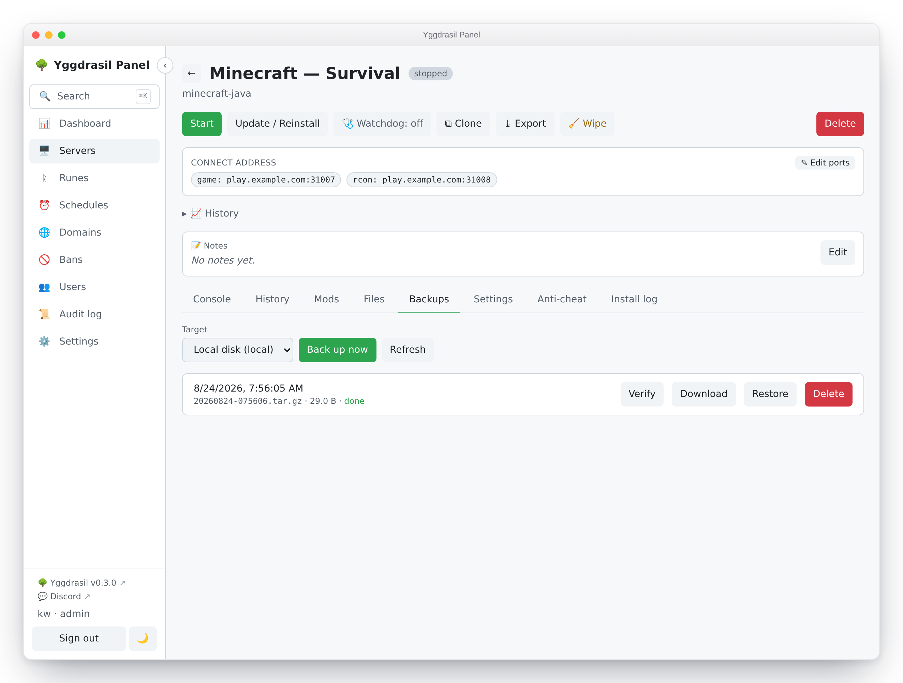
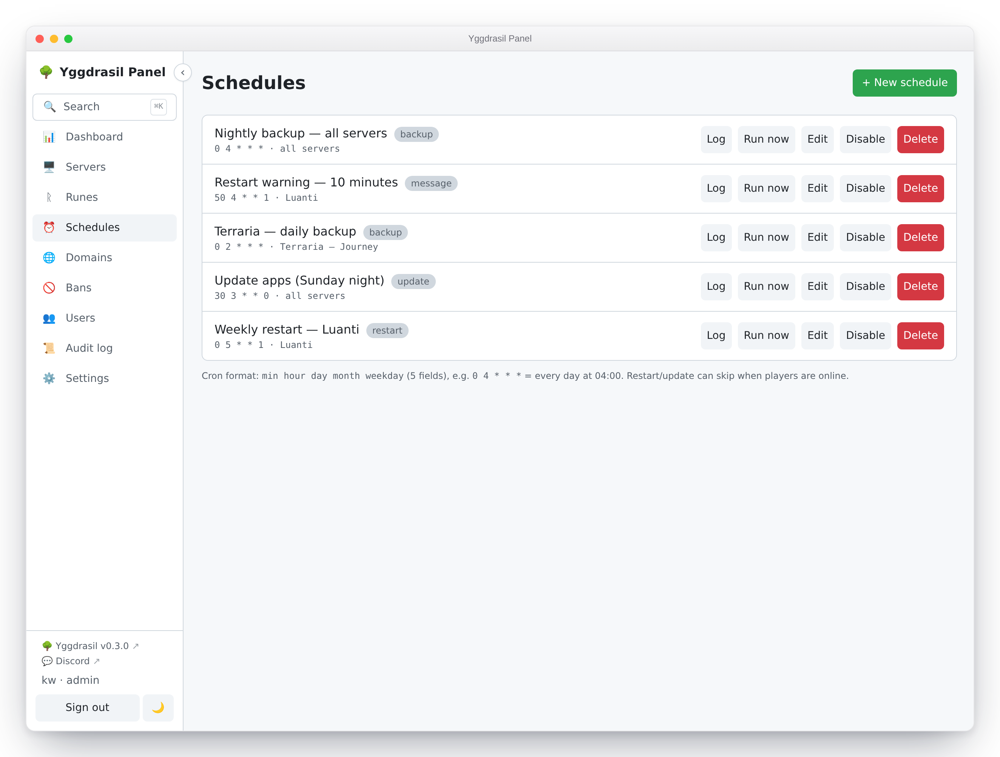

Backups and schedules
Where backups go, what is actually in them, how to prove one is restorable, and how to put any of it — plus restarts, updates and in-game warnings — on a cron schedule.
Backup targets
A target is a place archives are stored. Admins configure them under Settings → Integrations → Backup targets; there are three kinds.
| Type | UI label | What it is |
|---|---|---|
local |
Local / NFS / CIFS mount | A directory on the host. Also the right choice for an NFS or CIFS share you have already mounted — point the path at the mountpoint. |
sftp |
SFTP | An SFTP server, reached over SSH with a username and password. Port defaults to 22. |
smb |
SMB / CIFS (direct) | An SMB2 share, spoken natively with no host mount. Needs a share name. Port defaults to 445. |
Choose + New target, name it, pick the type, and fill in what it asks for. Local
wants a directory path (/mnt/backups); Yggdrasil creates it if it does not exist. SFTP
and SMB want a host, optional port, username and password, plus a remote path — relative
to the login directory for SFTP, and to the share root for SMB. SMB also wants the share
name.
Then use Test. It opens the target and lists it, which catches the whole chain — DNS, port, credentials, share name, permissions — before a backup depends on it. A failure comes back with the underlying error rather than a shrug.
Target credentials are encrypted at rest with AES-256-GCM, keyed from the panel’s secret. The target list decrypts only enough to show you the path and host; passwords are never sent back to the browser and never logged.
Two things to know about the SFTP target: it authenticates with a password (not a key), and it does not pin the host key. It suits a homelab NAS on your own network.
What a backup contains
A backup archives the server’s data directory — the volume mounted at /data in the
container.
Which parts, exactly, is the rune’s business. A rune (the code and API call it a
gameskill) may carry a backup block naming the paths worth keeping, relative to
/data:
backup:
include: ["world", "world_nether", "world_the_end", "server.properties", "plugins"]
When backup.include is absent, the whole data directory is archived. When it is
present, only those top-level paths are — an included path that does not exist on disk is
skipped rather than failing the run. Paths are stored relative to the data directory, so
an archive restores cleanly into a fresh install.
Only regular files and symlinks go in. Sockets and device nodes are skipped.
Backups do not include the server’s environment variables, port allocations, mods list or
any other panel-side state — that lives in Yggdrasil’s database, not in /data. A backup
restores a world; it does not recreate a server.
The archive format, stated plainly
A backup is a plain gzip-compressed tar — .tar.gz, nothing more. It is streamed
straight from the data directory to the target through a pipe, so a large world never
lands on the host as a temporary file.
The archive itself is not encrypted. Only target credentials are encrypted at rest. Anyone who can read the target directory, share or SFTP account can read your world files, your configs, and any secrets those configs contain. Set this expectation now, not during an incident:
- Do not treat an untrusted or shared remote as safe for backups.
- If you need encryption at rest, it has to come from underneath — an encrypted filesystem, an encrypted volume on the NAS, or a target only you can reach.
The upside of a boring format is that you are never locked in. Any machine with tar can
open a Yggdrasil backup, with or without the panel:
tar -tzf 20260714-031500.tar.gz # list what's inside
tar -xzf 20260714-031500.tar.gz -C ./out # extract it anywhere
Naming and layout
Archives are stored under a readable folder per server rather than a bare UUID, so a directory listing on the NAS means something:
<server-name-slug>-<first 8 chars of server id>/<YYYYMMDD-HHMMSS>.tar.gz
For example mc-survival-3f9a1c2b/20260714-031500.tar.gz. The name is lowercased with
anything that is not a letter or digit collapsed to a single dash; the short ID keeps the
folder unique if two servers share a name. Timestamps are UTC.
Retention works off the database, not off directory listings, so this layout is safe to browse, and safe to change in future.
Running a backup
Open a server, go to the Backups tab, pick a target and choose Back up now. The
run is asynchronous: a row appears immediately as pending, moves to running, then
done (with the archive path and size) or error (with the reason). Either outcome
sends a notification — ✅ with the size, or ❌ with the error.
Running a backup needs server.backup on that server. See
Users and permissions.
To cover several servers at once, use the checkboxes on the Servers list and the bulk
backup action: pick one target and it starts a backup for every selected server you have
server.backup on and that is installed.

Restoring
On the Backups tab, Restore on a completed backup. Yggdrasil stops the container first (with a 30-second grace period) so files are not swapped under a running game, marks the server stopped, streams the archive from the target and extracts it over the data directory. You start the server again yourself when you are ready.
Restore overwrites. Files in the archive replace files on disk; files not in the archive are left alone. It is not a rollback to a point in time — it is an extraction on top of whatever is there. If the current state matters, back up before restoring.
Extraction is guarded against archives that try to escape the data directory — worth knowing about if you ever restore an archive you did not create:
- Any entry whose resolved path lands outside the destination is rejected outright.
- A symlink entry pointing outside the destination is rejected, so a later entry cannot be written through it onto host files.
- Regular files are opened with
O_NOFOLLOW, so if the path already exists as a symlink the write fails rather than following it.
Any of these aborts the restore with an error, mid-way. An archive is not trusted on the grounds that it came from your own target.
Retention
Retention is per target, set when you create it, and applied after every successful backup to that target.
- Keep latest N — keep the N newest backups.
0disables the count rule. - Keep days — keep anything newer than this many days.
0disables the age rule.
The rules are OR’d: a backup survives if it is within the newest N or newer than the
day cutoff. Setting both is a floor plus a window — “keep at least the last 5, and
anything from the last 30 days”. With both at 0 there is no policy and nothing is ever
deleted.
Retention deletes the archive from the target and the row from the panel, and it only ever considers completed backups for that one server on that one target.
Verify
Verify on a completed backup downloads the archive and streams it through gzip and tar
to io.Discard — reading every byte, writing nothing anywhere. It is a real integrity
check, not a size or timestamp comparison: a truncated archive, a flipped bit or a
half-written upload fails at the gzip CRC or on a short tar entry. On success you get the
file count and total uncompressed size; on failure you get the error that killed it.
Verify writes nothing to disk and does not touch the server. Nothing stops you running it on a live server mid-session.
The result is stored on the backup, and the list shows a badge next to it:
- ✓ verified — the archive decompressed in full.
- ✗ corrupt — it did not. Take a fresh backup.
- no badge — never verified. Unknown, not good.
A target that is unreachable is not a corruption verdict; that comes back as a fetch error and leaves the badge alone.
Nightly auto-verify
Settings → Integrations → Backup verification has one switch: Verify the latest backup of each server nightly.
It is off by default, and deliberately so — it downloads each archive from its target, which costs real bandwidth on a remote SFTP or SMB store. Turn it on if your target is local or your link is cheap.
When on, the pass runs at most once per day and only checks the newest completed backup per server, which keeps the cost bounded and predictable. A background loop wakes every 30 minutes and runs the pass if it has not run today, so a panel restart or a box that was asleep at 3am catches up rather than skipping the day. The day is stamped before the pass starts, so a slow pass cannot re-trigger itself.
If any of those newest backups is corrupt, you get one notification naming the affected servers and their errors. A clean pass is silent. The panel shows the date of the last pass it started, not the last one that finished: it reads the same stamp, so the date appears the moment the pass begins.
Verifying only the newest backup is a deliberate trade. It answers “if I needed a backup right now, would it work?” — not “is my whole history intact”.
The backup-coverage nudge
The Dashboard shows admins a warning when installed servers have no recent backup: “N servers have no recent backup”, listing each one with how long ago its last backup was, or never.
“Recent” means a successful backup within the last 7 days by default. Only installed
servers count, and only backups that reached done — a server whose backups have been
failing for a week shows up here, which is the point. The card lists the servers by name
so you can go fix them. It disappears when everything is covered.
Schedules
Schedules in the sidebar. A schedule is a cron expression, an action, a scope, and some arguments.

Cron
Standard 5-field cron (min hour dom month dow), or 6 fields to get a leading seconds
field. The editor rejects anything that is not 5 or 6 fields before saving; the full parse
happens when the schedule is registered. Times are the panel host’s local time.
0 4 * * * every day at 04:00
0 */6 * * * every six hours
30 3 * * 1 Mondays at 03:30
New schedules start enabled. Disable keeps the schedule but stops it firing; the cron is rebuilt from the enabled schedules whenever anything changes.
Scope
| Scope | Runs against |
|---|---|
| Server | That one server. |
| Realm | Every server in that realm, at the time it fires. |
| Global | Every server. |
Realm and global schedules pick up servers added later — that is the point of them, and
the thing to think twice about before scoping a stop globally.
Realm and global schedules are admin-only, to create and to see: a delegate’s schedule
list only contains server-scoped schedules for servers they hold server.schedule on.
Some rows are managed by a per-server control (the auto-restart toggle writes one). Those are hidden from the Schedules page on purpose, so they cannot be hand-edited into a state the control does not expect.
Actions
| Action | What it does |
|---|---|
backup |
Backs the server up to the chosen target. Same path as the Backups tab, retention included. |
restart |
Recreates the container and starts it — not a plain Docker restart, so rune, env and mod changes land too. Falls back to a plain restart if recreation fails. |
start |
Starts the existing container. Errors if the server has no container yet. |
stop |
Stops the container, 30-second grace. Skips if there is no container. |
command |
Sends a raw command over RCON, falling back to the container’s stdin for games without it. |
message |
Renders a message template and sends it to players the same way. |
update |
Re-runs the install/update (SteamCMD and the like). Synchronous, so the run log reports the real outcome. |
The API also accepts a wipe action, which resets world/persistence as the rune defines
it and needs server.control like the Wipe button does. The schedule editor does not offer
it; wiping is normally done from a server’s Wipe button, which asks for confirmation and
runs once, immediately.
A warned restart — optionally back up, broadcast the rune’s countdown to players, then recreate — is a server’s Safe restart action rather than something the schedule editor offers. The backup runs first, before the countdown starts, so the archive captures the world as it stood when you pressed the button rather than at the end of the warning window.
A restart schedule can do the same via the API by passing warn: "true" in its
arguments; because the countdown blocks for minutes, that variant runs in the background
and the run log records it as started rather than finished.
Message templates
message sends a template rather than free text, so the wording lives in one place.
Templates are edited under Settings → Integrations → In-game message templates, and
Yggdrasil seeds five on first boot: Restart warning, Restart countdown, Backup warning,
Maintenance notice, Update warning.
A template body is the full console/RCON command, so it works across game types — you tune the syntax per game if you need to:
say Server restarting in {{minutes}} minutes. Please find a safe spot.
{{key}} placeholders are substituted at send time. Three keys are substituted:
{{server_name}}, {{minutes}} and {{seconds}}.
The panel fills in {{server_name}} itself. For the rest, the schedule editor reads the
template you picked and gives you an input for each placeholder it uses — pick Restart
countdown and you’re asked for a {{seconds}} value; pick Backup warning, which
uses only the server name, and you’re asked for nothing. The body is shown under the
picker so you can see what you’re filling in.
A placeholder nothing fills in is left in the text untouched, and a template still
holding one at send time is not sent: the run log records
error — template needs a value for {{seconds}} instead. A message going out to your
players with a gap where a number should be is worse than one that doesn’t go out, and
the run log is where you find out why.
Warning players before a scheduled restart
restart offers warn players with the in-game countdown first, on by default. It runs
the same safe-restart path as the button on the server page: Yggdrasil broadcasts the
rune’s restart.warnings countdown in-game, waits it out, and then restarts. The run log
records warned restart initiated when the countdown starts, because the countdown
outlives the run itself.
A game whose rune declares no countdown has nothing to broadcast, so it restarts straight away — the setting costs nothing there, but it buys nothing either. A schedule scoped to a realm or to all servers can span both kinds.
Untick it for a restart that should happen immediately and unannounced. That is the right choice at 04:00 on an empty server, and the wrong one at 20:00.
Skipping when players are online
restart and update offer skip if players are online. When it is on, Yggdrasil
queries the server’s player count before acting and skips if anyone is connected; the run
log records skipped — players online.
This needs the rune to define a query protocol. If the count cannot be determined the action goes ahead — an unanswerable query is not treated as “players online”. Do not lean on this as a safety interlock on a game Yggdrasil cannot query.
Run history
Log on a schedule shows its recent runs: when it fired, which server, the action, the status and a detail string. The panel keeps the last 100 runs per schedule and shows the 50 most recent.
Every firing records one row per target server, so a realm-scoped backup across six servers writes six rows. Status is one of:
ok— done, with a detail likerestartedorbackup completed.skipped— deliberately not done: players online, no command configured, already stopped.error— tried and failed, with the reason.
A scheduled backup runs synchronously and reports its real outcome, so ok here means
the archive reached the target and error carries the reason it didn’t. That makes the run
log a usable answer to “did last night’s backups actually run?” — you don’t have to
cross-check every server’s Backups tab.
A warned restart is the one action that reports what it started rather than what it
finished: the countdown runs for minutes in the background, so the row says warned restart initiated as soon as the warning goes out.
A firing that matches no servers records a single skipped row with no servers in scope.
Run now fires a schedule immediately, ignoring its cron time. It is the way to test one without waiting for 4am.
One notification per firing
A firing sends one summary notification, not one per server:
✅ Schedule "nightly-restart" (restart): 5 ok, 1 skipped, 0 failed
ok: alpha, beta, gamma, delta, epsilon
skipped: zeta (players online)
The icon is ✅ when everything worked, ❌ if anything failed, ⏰ if nothing ran.
Only state-changing actions notify: start, stop, restart and update. Backups stay
quiet at the schedule level because runBackup already emits its own ✅/❌ per server, and
message and command are in-game only — announcing them to your phone would be noise.
See Notifications for wiring up channels.
Who can do what with schedules
Creating a schedule needs server.schedule on the target server, plus the scheduled
action’s own permission — so a Schedule grant cannot be escalated into powers the
delegate does not otherwise have:
| Action | Extra permission needed |
|---|---|
command |
server.console |
start, stop, restart, update |
server.control |
wipe |
server.control |
backup |
server.backup |
message |
none beyond server.schedule |
Each action’s requirement matches the gate on the equivalent direct endpoint, so scheduling something never grants more than doing it by hand would. The table is exhaustive and fails closed: an action with no entry is rejected rather than waved through, and a test asserts every known action appears here — a new action cannot reach the scheduler ungated.
Admins skip this check, as they skip all of them.
There is an asymmetry here worth knowing before you hand out server.schedule:
Update, delete and run-now are admin-only. Not permission-checked — admin-only, flatly.
A delegate with server.schedule on a server can create a schedule there and read its
run log, but cannot then edit it, disable it, delete it, or trigger it. Once created, it is
yours to manage.
The practical consequences:
- A delegate who mistypes a cron expression cannot fix it. They need an admin, or a second schedule.
- A delegate cannot turn off a schedule they created — not even their own runaway one.
server.scheduleis closer to “may propose recurring work” than “may manage schedules”.
If you want someone to own schedules end to end, they need to be an admin. If you want them
to have no say, do not grant server.schedule.